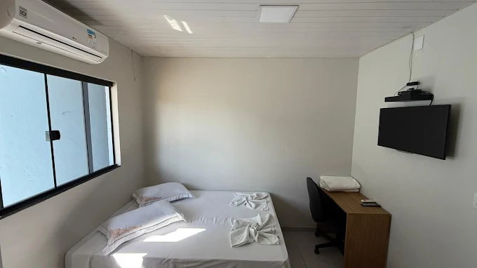
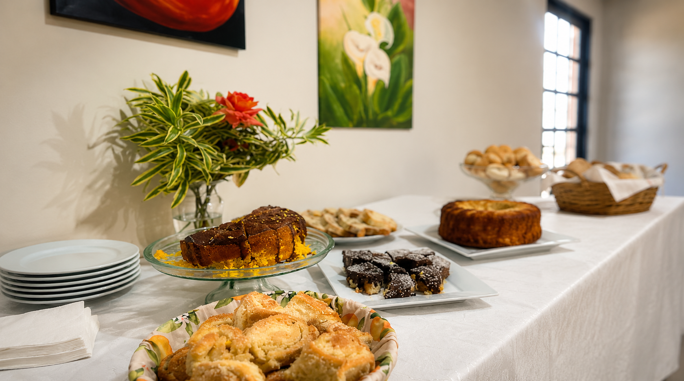
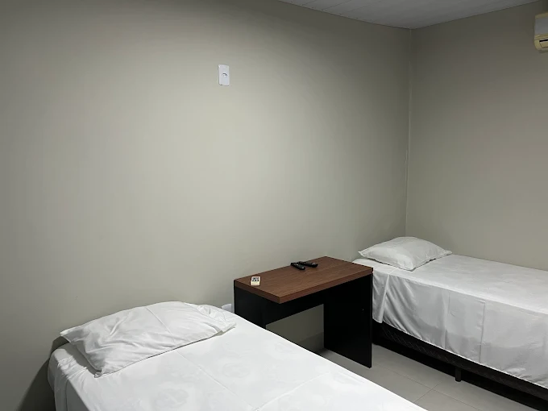
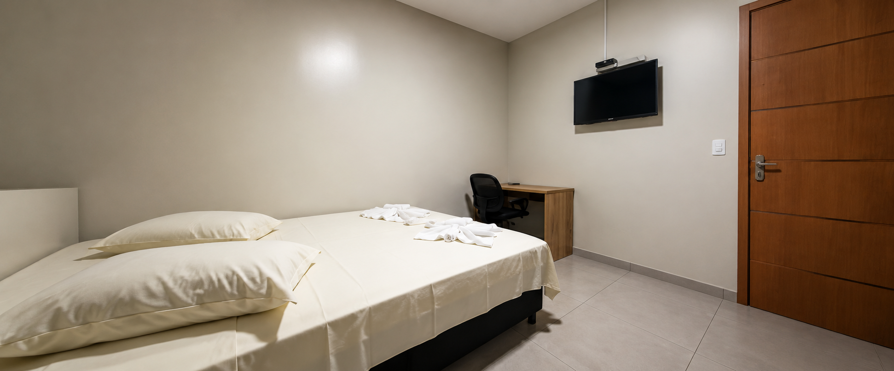
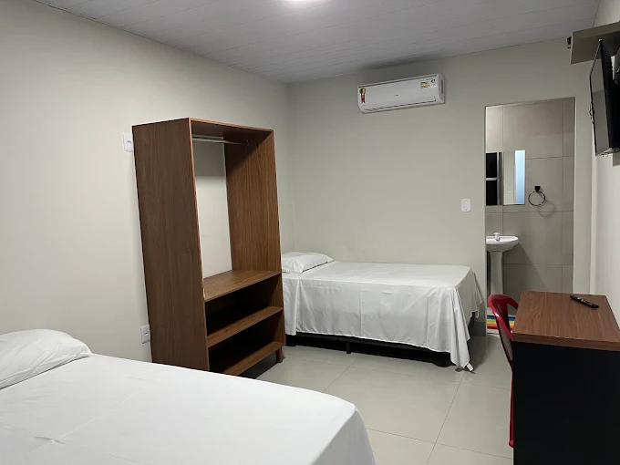
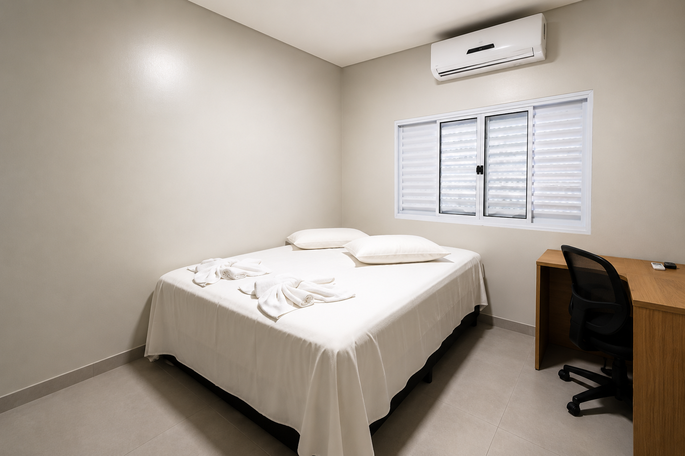
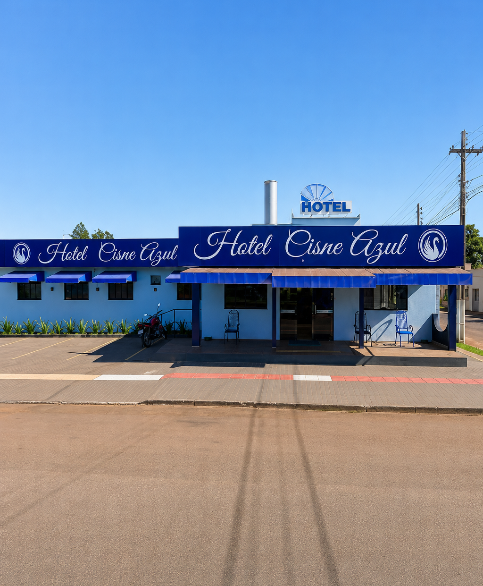

Hotel 24h
Atendimento a qualquer hora do dia ou da noite.
Hotel Cisne Azul fica em Sidrolândia. Esta hospedagem domiciliar oferece jardim e estacionamento privativo grátis.
A hospedagem domiciliar oferece toalhas e roupa de cama.
Um dos fatores mais consistentemente elogiados pelos visitantes é a qualidade do atendimento.
Essa abordagem cria uma atmosfera acolhedora, fazendo com que os hóspedes se sintam em casa.
Para quem passa dias longe de casa, seja a trabalho ou a lazer, encontrar um ambiente que oferece essa sensação de bem-estar.
A localização central é, sem dúvida, uma vantagem estratégica. Estar no coração de Sidrolândia facilita o acesso a comércios, restaurantes e outros serviços, permitindo que os hóspedes se desloquem com facilidade, muitas vezes a pé.

Atendimento a qualquer hora do dia ou da noite.

Para começar bem o dia com aquela energia.

Nos dias de hoje é imprescindível ficar sempre conectado.

Cada detalhe é cuidadosamente planejado para proporcionar uma estadia única e relaxante.

Escolha o que melhor se adapta à sua necessidade.

Camas aconchegantes, TV a cabo, ar condicionado e um ambiente sofisticado que farão você se sentir em casa.
é o destino ideal para quem busca conforto, praticidade e uma experiência acolhedora. Pensada para oferecer bem-estar em cada detalhe, a pousada conta com quartos equipados com ar-condicionado, Wi-Fi gratuito e banheiro privativo, garantindo comodidade e tranquilidade durante toda a sua estadia.
Todos os quartos possuem varanda térrea, proporcionando um ambiente agradável e perfeito para relaxar. Além disso, cada acomodação é equipada com mesa de trabalho e TV de tela plana, unindo conforto e funcionalidade. Para sua total comodidade, disponibilizamos roupas de cama e toalhas de qualidade.
Ao buscar uma opção de hospedagem em Sidrolândia, Mato Grosso do Sul, o Hotel Cisne Azul surge como uma alternativa que se equilibra entre a simplicidade e o conforto essencial.
Localizado na Rua Paraná, 1028, no centro da cidade, este estabelecimento se posiciona como uma escolha pragmática para viajantes que valorizam a localização e um serviço atencioso.

O nosso check-in inicia às 16:00 e o check-out deve ser realizado até as 11:00. Caso necessite de horários flexíveis, entre em contato conosco previamente para verificar a disponibilidade.
Sim! Oferecemos um café da manhã preparado com muito carinho para que você comece o dia com total energia e conforto.
Sim, disponibilizamos estacionamento privativo totalmente gratuito para os nossos hóspedes durante todo o período da estadia.
As reservas podem ser feitas rapidamente clicando no nosso botão do WhatsApp. Sobre cancelamentos, nossa equipe informará as condições vigentes no momento do seu contato.